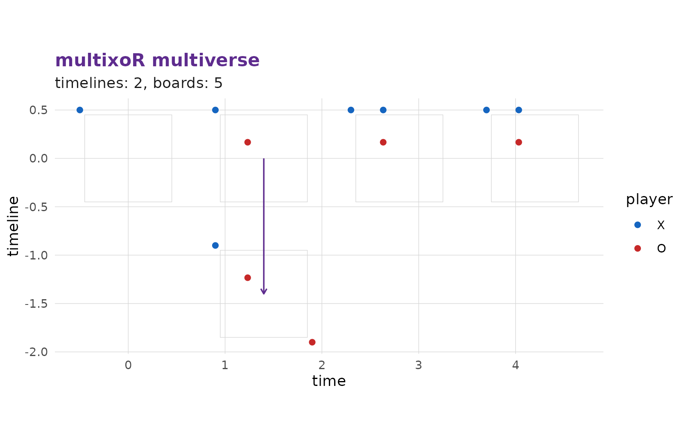
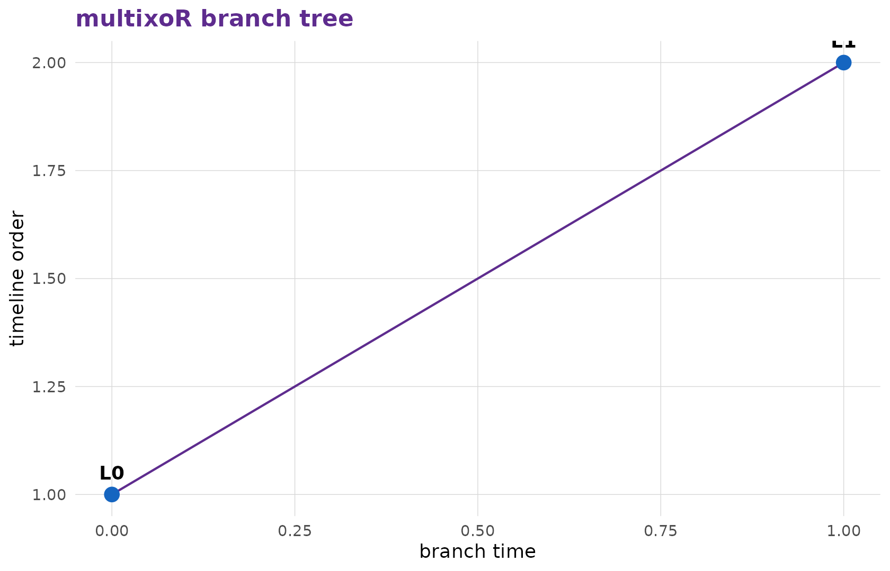

3. Branching into the past
Source:vignettes/articles/tutorial-3-branching.Rmd
tutorial-3-branching.RmdSo far (part 2) we only played present moves in a single universe. The branch move is what turns multixoR into a multiverse game.
What a branch does
A branch move places your mark into an empty cell of a past board. Instead of editing history, it spawns a brand-new, parallel timeline that copies that past board plus your new mark. The original timeline is left completely untouched. Branching is unrestricted – you may branch from any reachable past board, as often as you like.
The call mirrors a present move, but kind = "branch" and
(L_src, t_src) names the past board you are
branching from:
mxo_move(game, "branch", L_src, t_src, idx)A worked branch
Let’s play three present moves and then branch from a past board. We
start in timeline L = 0:
g <- mxo_new_game()
g <- mxo_move(g, "present", 0L, 0L, 0L) # X (0,0,0)
g <- mxo_move(g, "present", 0L, 1L, 5L) # O (1,1,0)
g <- mxo_move(g, "present", 0L, 2L, 1L) # X (1,0,0)
mxo_timelines(g)
#> # A tibble: 1 × 4
#> L parent branch_t present_t
#> <int> <int> <int> <int>
#> 1 0 NA NA 3There is one timeline so far. Now X – rather, O is to move – branches
from the past board (L = 0, t = 1) by placing at
the far corner idx = 63:
g <- mxo_move(g, "branch", L_src = 0L, t_src = 1L, idx = 63L)
mxo_timelines(g)
#> # A tibble: 2 × 4
#> L parent branch_t present_t
#> <int> <int> <int> <int>
#> 1 0 NA NA 3
#> 2 1 0 1 1A second timeline, L = 1, has appeared. It contains the
board as it stood at t = 1 in timeline 0, plus O’s new mark
at the corner – while timeline 0 still carries on with its own
history.
Seeing the multiverse
mxo_plot_multiverse() lays every board out on a
timeline x time grid and draws the branch connectors,
so you can see at a glance where universes split:

mxo_plot_tree() shows the same branching as a tree of
board states, which is often the clearest way to follow how the
timelines relate:

Why branching matters
Branching is not a gimmick: a winning line may run
across timelines (the L axis) as readily
as through space or time. That means a branch can set up a threat that
simply does not exist in ordinary tic-tac-toe, and a careless opponent
can be beaten in a universe they were not even watching. We make a
timeline-axis win concrete in the next page.
Previous: 2. Playing your first game | Next: 4. Winning across space, time and timelines →